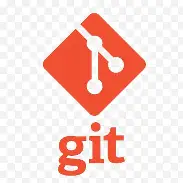

Git es un sistema de control de versiones distribuido, ampliamente utilizado en el desarrollo de software moderno. Fue creado para gestionar proyectos de forma rápida, eficiente y colaborativa.
git init - Inicializa un nuevo repositorio Git en el directorio actual. Este comando crea un repositorio vacío.git clone [url] - Clona un repositorio remoto en tu máquina local. Ejemplo: git clone https://github.com/usuario/repositorio.git.git status - Muestra el estado del repositorio: archivos modificados, nuevos archivos no rastreados, cambios preparados para el commit, etc.git add [archivo] - Agrega un archivo o cambios específicos al área de preparación (staging area) para el commit.git commit -m "[mensaje]" - Crea un commit con los archivos añadidos al área de preparación, agregando un mensaje descriptivo.git push - Sube los cambios locales al repositorio remoto. Generalmente se usa después de un commit para actualizar el repositorio remoto.git pull - Obtiene y combina los cambios del repositorio remoto al local. Equivalente a git fetch seguido de git merge.git checkout [rama] - Cambia a una rama específica del repositorio. Si la rama no existe, se puede crear con git checkout -b [rama].| Sistema | Tipo | Popularidad |
|---|---|---|
| Git | Distribuido | Muy alta |
| SVN | Centralizado | Media |
| Mercurial | Distribuido | Baja |
| Perforce | Centralizado | Especializado (AAA, empresas) |

GitHub es una plataforma en la nube que permite almacenar, compartir y colaborar en proyectos de código. Utiliza como base Git, un sistema de control de versiones que registra y administra cambios en archivos, facilitando el trabajo en equipo sin sobrescribir el trabajo de otros.
VisitarSVN, abreviatura de Subversion, es una herramienta open source diseñada para el control de versiones de archivos y directorios, especialmente en proyectos de software. Su objetivo principal es permitir que varios desarrolladores trabajen simultáneamente sobre el mismo proyecto, manteniendo un historial de todas las modificaciones y facilitando la recuperación de versiones anteriores. Esto ayuda a organizar el desarrollo, revertir cambios erróneos y mantener la estabilidad del proyecto.
VisitarMercurial es un sistema de control de versiones multiplataforma, diseñado principalmente para desarrolladores de software. Fue creado por Matt Mackall y lanzado por primera vez en 2005. Su principal objetivo es ofrecer un alto rendimiento y escalabilidad, permitiendo un desarrollo completamente distribuido sin necesidad de un servidor central.
VisitarPerforce es una herramienta de control de versiones (SCM) que permite gestionar cambios en el código fuente de manera eficiente. Es especialmente útil en el desarrollo de videojuegos, ya que ayuda a prevenir errores y garantiza la estabilidad de los juegos. Perforce permite a los desarrolladores guardar instantáneas de su trabajo, lo que les permite revertir cambios en caso de que algo salga mal. Además, es accesible para equipos pequeños y medianos, lo que la convierte en una opción popular en la industria del videojuego.
Visitar
Completá el siguiente formulario para compartir tu experiencia: